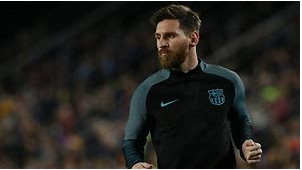
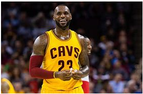

I am im in too a lot of sports like for example soccer, football, basketball, and also other sports.
Here is a link to one of the sports website that I use frequently to keep me updated on sports and also to watch them.
ESPN WEBSITE
Out of all those sports my favorite sport is soccer. And in soccer my favorite player is Leonil Messi

I also like basket ball and football i'm not really a big fan of watching but I do like playing basket ball. My favorite basketball player is Lebron James. I like him because he is one of the little basket ball players I know also I am a bandwagon.
